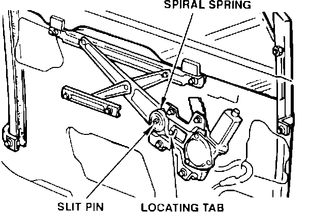
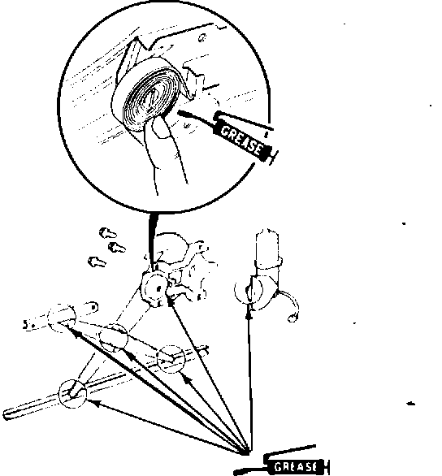

Window Regulator - Creaking Noise
9220acura01
BULLETIN NO.
92-008
March 30, 1992
YEAR MODEL VIN APPLICATION
1986-91 INTEGRA ALL
1988-90 LEGEND
Creaking Noise from the Window Regulator
SYMPTOM
A creaking sound from the window regulator while raising or lowering the window. This noise usually occurs in front window regulators, but may also occur in rear window regulators of Legend Sedans.
PROBABLE CAUSE
A noisy spiral spring.
CORRECTIVE ACTION
Replace the spiral spring with the new part listed under PARTS INFORMATION.

1. Remove the window regulator as described in the appropriate service manual.
2. Remove and replace the spiral spring as follows:
^ Move the window regulator arm to its lowest position to reduce the spiral spring tension.
^ Using a flat-tipped screwdriver, pry the outer end of the spiral spring away from the locating tab on the regulator. Remove the old spring.
^ Slide the new spiral spring over the slit pin of the regulator. Use a flat-tipped screwdriver to hook the outer end of the spring over the locating tab.

3. Lubricate the plastic slides with White Lithium Grease (P/N 08732-0005). Apply multipurpose moly grease to the spiral spring as shown.
4. Reinstall the window regulator and reassemble the door.
PARTS INFORMATION
Spiral Spring.
Year/Model Window Part Number
1986-89 Integra All types 72212-SH3-003
1990-91 Integra 3 door Power 72212-SK7-J01
1990-91 Integra 3 door Manual 72212-SK7-003
1990-91 Integra 4 door Power 72212-SK8-J01
1990-91 Integra 4 door Manual 72212-SK8-003
1988-90 Legend Coupe Power 72212-SH3-003
1988-90 Legend Sedan Power 72212-SH3-003
WARRANTY INFORMATION
In warranty: The normal warranty applies.
Out-of-warranty: Any repair performed after warranty expiration may be eligible for goodwill consideration by the District Service Manager. You must request consideration, and get the DSM's decision, before starting work.
Operation number:
826115 left front
827115 right front
829115 left rear (Legend Sedan)
830115 right rear (Legend Sedan)
Flat rate time: 0.8 hour
Failed P/N: P/N 72212-SK7-003
Defect code: 042
Contention code: B07